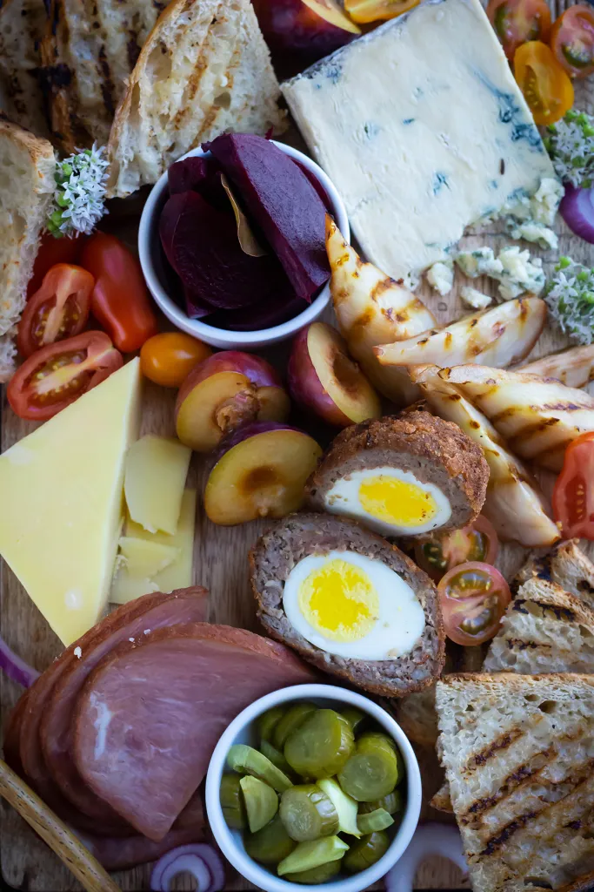

Ploughman's Lunch

Description
The Hobbit: Ploughman's Lunch recipe for this year's Hobbit Day inspired by The Lord of the Rings and the Hobbit by JRR Tolkien.
Ingredients
- grilled bread
- Silton Cheese
- Cheshire Cheese
- cherry tomatoes
- assorted fruit - berries, plums, cherries
- cold cut meat - ham, chicken, roast
- pears - sliced into 6 wedges
- cornichons
- pickled beets
Scotch Egg
- 5 hard boiled eggs - peeled
- 8 ounces sausage meat - remove the casings if it has it
- 2 whole eggs - whisked
- 3/4 cup all purpose flour
- 1 cup breadcrumbs
- frying oil - as needed for garnish
Steps
Scotch Egg
- Take the sausage meat and divide it into 5 equal portions.
Take on portion in your hand and flatter it out into a thin oval.
Lay the egg on the middle and wrap the sausage meat around the egg.
Gently press the egg and sausage together. Repeat with the rest of the eggs.
- Roll the eggs in the flour and dust off any excess. Roll it in the whisked eggs and then into the breadcrumbs.
Set it aside and repeat with the rest of the eggs.
- Heat the frying oil in a saucepan over medium high heat to 375F.
Gently place the prepared scotch eggs into the hot oil and frying for 5 minutes, flipping half way through.
Once golden brown and cooked through, place it on a paper towel lined tray to cool.
Let it cool slightly before slicing in half and serving.
Grilled Pears
- Heat your cast iron grill on high heat. Once hot, lay the sliced pear wedges on the grill long enough
to get some grilled marks, 1-2 minutes. Turn on repeat on the other side.
Assembly
- An hour before you serve the ploughman's lunch, let your cheese temper by placing
the cheese on the serving platter and covering it with a towel.
- Arrange the larger pieces on the platter first like the bread, ham, scotch egg, pears, and pickles.
Fill in the space with fruit and cherry tomatoes. I added chive blossoms to the platter but you can add any herbs you like.
Notes
- The scotch eggs can be assembled a day ahead. Refrigerate until needed.
- I listed two types of cheese but you can use your personal favorite or anything new and interesting you find at the market.
- It's not photographed, but I served this with a side of honey and mustard! It's a very delicious addition.